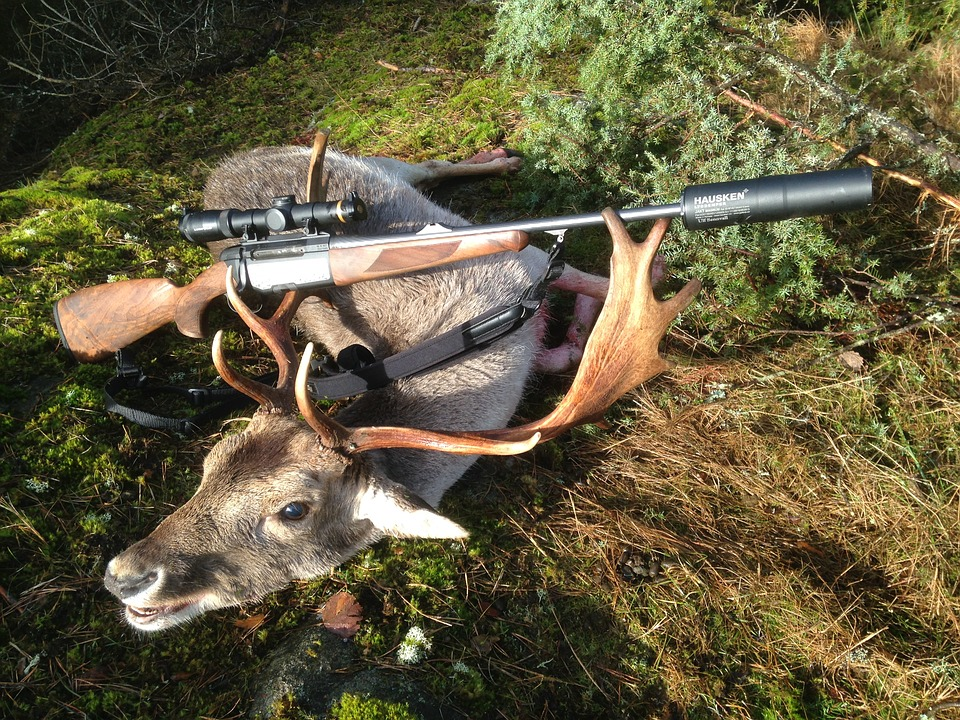

Acceuil
Bienvenue !
Ce site est fait pour vous parlez de moi et mes passions vous allez voir mes projets, mes jeux vidéos préférés, mes passions, etc.
Je vais vous présenter des jeux tel que (Pubg), (Tekken), etc.
Je vais aussi vous parlez de quel que loisirs comme par exemple le vélo
mais aussi de mes passion pour la nature et les jeux vidéos
la chasse et une pratique qui existe depuis le (moyenne âge) si vous vouler en savoir plus sur ce loisirs diriger vous vers l'onglet "loisirs"